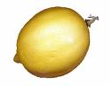
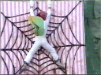

Chino del limonero
 De: La Frikipedia, la enciclopedia extremadamente seria.
De: La Frikipedia, la enciclopedia extremadamente seria.
 Uno de sus 56 trillones de limones.
El chino del limonero es una nueva raza que recoge limones en tanga mientras canta una cancion conocida como : It's raining men , aleluyaa . Se han expandido por todo el mundo recogiendo limones de todas las maneras posibles. Existen muchos chinos del limonero :
Tipos de Chinos del Limonero
Uno de sus 56 trillones de limones.
 Un chino del limonero trepando camuflado por casa de tu vecino , para conquistarla.
- Chino del limonero mafioso: Este se dedica a irse a otros paises como Aspaña y hacer cosas impuras en ellos , que incluyen baños con limones y canciones de Oliver & Benji. Estos son peligrosos, si no les das limones te darán a elegir : tu culo o tu vida. Si eliges tu culo, te lo dejaran como la bandera de Japón.
- Chino campesino del limonero: Estos , cultivan limones en todos los sitios que ven , como : motos, coches, tetas de Ryotsu, tu culo , tu suegra, en la tarta de la abuela, en la tele de tu vecino,... etc etc.
- Chino militar limonero: Estos son muy peligrosos, se dedican a conquistar paises obligandolos a cagar tanta mierda como puedan antes de morir desidratadosos, la cual usan de abono con un poco de energía nuclear para sus limoneros.Se distinguen :
- Chino del limonero camuflado de plátano: Estos se esconden y se relacionan con jessis para ocultarse mientras analizan posibles zonas para plantar limones.
- Chino de evasión limonera: Estos parecen chinos reales pero lanzan limones que te rompen toda la polla.
- Chino capitán limonero: Estos mandan , y por eso llevan un casco con forma de limón.
- Chino capitán tralalarero limonero: Estos mientras mandan a sus tropas cantan una canción similar a We are the world , pero con otra letra :
- Chino griton del limonero: Estos gritan limooooooooooooooooooneeeeees , hasta que te hacen mas mierda el celebro que el reggayton.
- Chino general caralimon: Estos , tienen cara de limón y polla tambn. Se corren en tu cara dejandote transformado en un limón deforme.
- Chinomandamásmariconchilimonero: Este , manda a todos los demás montado sobre un limón gigante , pero no es el jefe supremo.
- Super Chinomon Limoneron Supremo Reyon: Es el rey de los Chinos limoneros , nadie lo ha visto , excepto los limones de al lado de tu casa.
Himno

|
We are the limones,
We are the chinos,
We are the ones who want to make limonees,
So let's start planting,
Put a lemooon,
in your...
LIVEEEEE
|

|
|
|
Conquista actual
Actualmente solo han conquistado la casa de su vecino ( Si , 80 000 millones de chinos en una casa de 20metros cuadrados ). Pero plantean conquistar tu casa y la de tu vecino , y la del otro , y la del hijo Monstruo Spagetti Volador.
Religión
Su religión es el Limonismo , que consiste en rezar a un limón rojo que cayó en su tierra un día. He aquí un extracto de su Genesis:
|
|
Y el cielo se volvió amarillo y calló un limón rojo puro , como el mar. En ese momento , decidió hablar y dijo : El que caga , abona , El que abona , caga , Y el que planta un limón , no caga.
|
|
|
|
|
|
Entonces aparecieron los árboles llenos de limones y unos animaloides con forma de limón , pero pronto aparecieron los caóticos Dioxs de otras religiones y...
|
|
|
|
Este , fue escrito por un daltonico ( obvio ).
Su rezo más común es :
|
|
Limón nuestro que estas en la mierda,
Crece hoy y crece mañana,
y danos nuestro limonero de cada día.
Ayudanos a someter a los naranjos.
Oh Limón rojo como los mares eres.
|
|
|
|
Héroes en la historia de los chinos limoneros
Un chino del limonero camuflado... tras fumar varios limones...
- Chino limonero awapower : Este chino , iva con una peluca a lo 11811 , y unos pantalones ajustados que le marcaban su paquete de 45'6 cm y tatuados con limones de colorines. Era más daltonico que su Disco'estu por la calle. Triturando el celebro de más de un tarugo que pasaba por ahí , causandoles un efecto peor que el reggeton con sus canticos tan finos...
- Chino limonero Lee : Este, se creía Bruce Lee e iva dando grititos y amenazando con un limón a todo el mundo hasta que un perro lo violó, y le rompió la columna vertebral.
- Chino limonero tortugoso ninja : Este , se cría una tortuga ninja, y ante todo el mundo saltó a una pecera , y se quedó trabado dentro y murió ahogado como un gilipollas.
Cómo nos exterminarán
Llegarán y empezarán a plantar limones y sus culos peludos nos asustaran. Entonces nos atraparan y nos obligaran a tragarnos 80 botes de laxante y empezaremos a cagar tanto que nos desidrataremos y moriremos.
Su final
Su final aún no se sabe , pero se cree que será cuando sus mujeres resuciten. Si , estas fueron encerradas en un cesto gigante y tiradas a un water enorme de la marca Roca. Estas habían sido desterradas por su gran insulto a los creyentes de la religión limonera : ¡Deja de fumar niñoo!
Más datos sobre...
Homer tras enterarse de que el chino limonero awapower sigue vivo
- Chino limonero Awapower.: En la escuela del monte en el que se refugiaban los chinos limoneros hace 30 años , nació este. A los 5 años , se agarraba el paquete mejor que Disco es'tu, pero Homer lo mandó a la mierda con su martillo eléctrico. Ahora vive en el armario de tu casa , pues , fue expulsado del mundo musical por Belén Esteban , que le gritó en el oido : Yo por mi hija MA-TO Para ser exactos el diálogo fue este :
|
|
Chino limonero Awapower (CLA) : Hola , vengo a plantar limones y cantar , ¡Aaauww!
Bélen Esteban (BE) : Fijate lo que te digo , yo por mi hija MA-TO , ¡Eh!
CLA : Pero... Si yo...
BE : ¡Que MA-TO! Te lo digo desde ya.
CLA: ¡Pero que yo no he dicho nada de su hija!
BE : ¡Qué te digo que yo MA-TO!
|
|
|
|
Acto seguido , le dió una ostia y le volvió a gritar lanzandolo volando.
- Chino limonero lee: Cuando era pequeño vió 183 veces las pelis de pokemons lo pillaron y lo retaron. Fue un combate bestial que acabó dejando tetraplégicos a los pokemons. Iva todo chulo sonriente y se resbaló con una papa frita... entonces se cayó por un puente y se quedó paralítico... Entonces un perro parlante le dijo :
|
|
Perro parlanta (PP) : ¡Eh! Si , tú. Tu y yo vamos a hacer cositas.
Chino limonero Lee (CLL) : ... ¿Qué diceeeeeeeeees?
Y acto seguido , el perro lo violó.
|
|
|
|
- Chino limonero tortugoso ninja: De pequeño le metían lápices por el culo , y un día se artó , y a los 32 años se fue de su país. Nada más llegar llamó la atención de todos para hacer un número espectacular , saltar en una pecera. Al saltar se le atascó el caparazón y murió. Tras la aparición de estos 3 héroes la gente alucinó y finalmente... los chinos del limonero decidieron comenzar la masacre.
Dichos populares
- Lo que no mata , es un limón
- Los limones son tan rojos como tu culo
- Tienes los ojos más cerrados que un chino del limonero gritón
- Lo que mata , no es un limón
- El limón malo nunca muere
Exito del verano
Una de las muchas cajas de laxantes que te harán tragar.
|
|
Caen gotas...
Caen limones...
Caen limonadas...
Caen laxantes...
La plegaria del chino limonero...
Cumplida se ha...
Cumplida se ha...
La plegaria del chino limonero...
Por eso... como buen chino limonero...
planto limoneros...
¡¡ Y te doy laxantes !!
¡¡ Y te doy más laxantes !!
¡¡ No paras de cagar !!
¡¡ Tu culo va a reventar !!
¡¡ Mil limones abonarás !!
¡¡ Mil mierdas cagarás !!
Soy... un Chinooo... ¡ limonerooo !
Soy... un Chinooo... ¡ limonerooo !
¡¡¡ Limoneroooooooo !!!
¡¡¡ Y más limonerooo !!!
¡ Volaré en un limón !
Porque planté mas de un limón...
Soy... un Chinooo... ¡ limonerooo !
Soy... un Chinooo... ¡ limonerooo !
|
|
|
|
Autor(es):
- Dark temptation
- Mystraven
- Dancob
- Caracaja
- Generibot
- ELFRIKINATOR
Frikipedia 2005-2016, Licencia
GFDL 1.2 - Extraído por FrikiLeaks